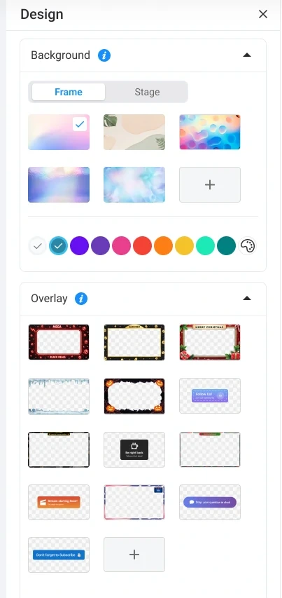

A production workspace for the person who is presenting, producing, and listening—all at once.
Help a host manage people, content, and engagement while actively presenting.
I designed the Live Room from scratch, including stage layouts, contextual tools, and presenter support.
Implemented as a live broadcasting workspace with a stable stage and reusable tool panels.
Design constraint · Limited attention, limited space. Keep the live result visible while giving production tools enough room to work.
The host cannot stop being a presenter to become a software operator. I structured the workspace so production tools support the live output.
The design places scene management, the stage, and contextual controls in distinct zones. This gives the room a repeatable spatial model as the host moves between tasks.
Scene navigation and composition choices.
The broadcast preview remains the primary visual reference.
People, chat, offers, and design open beside the stage.
Three zones keep preparation, presentation, and live operation distinct.
I used visual layout presets to make composition a spatial choice. The half-screen layout prioritizes one speaker while keeping the group visible. The control stays close to the preview it affects.
Participant management remains adjacent to the live result.
People and engagement tools occupy the same right-side region. The stage remains a stable reference.
Opening tools reduces available stage width. Keeping panel tasks contained protects the rest of the workspace from unnecessary movement.
Reuse one panel region for people, chat, and offers.
Opening a panel reduces the available stage width.
Tools have a predictable location while the live preview stays in view.
Chat gives the host an ongoing reading-and-reply loop beside the stage. The conversation remains separate from production controls.
The offer panel prioritizes the deadline, value, and CTA. It applies the same contextual workspace pattern to a different audience interaction.
I brought the teleprompter into the room itself. Its darker reading surface distinguishes the script from the production chrome.
Design tension: a larger reading area supports legibility but occupies more of the broadcast preview. This balance needs to be tested while someone is actively presenting.
Blue signals interaction and selected tools. Red differentiates leaving or stopping from everyday production actions. Light surfaces separate controls from the visual richness of the broadcast.
Visual-system study based on the product screens; color values are approximate.
Background thumbnails communicate appearance directly. Color swatches and overlay previews let the host recognize a visual choice, while grouped sections contain the configuration depth.

The Live Room was implemented for live webinars. My contribution established a stage-led layout, composition presets, contextual panels, and integrated presenter tools in collaboration with product managers and developers.
The next evaluation focuses on attention switching: can a host manage participants or an offer while continuing to present?